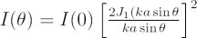
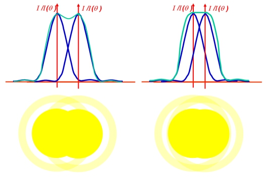

The resolution of a telescope is its ability to separate two point sources into separate images. Under ideal conditions, such as above the atmosphere where there is no turbulence (seeing), the resolving power is limited by diffraction effects.
For a circular aperture, such as the objective lens of a refracting telescope or the primary mirror of a reflecting telescope, a point source will appear as a disk surrounded by many thin, faint rings. These rings are produced by Fraunhofer diffraction, and the shape of the rings is given by the equation:

where I(θ) is the irradiance at an angle θ, I(0) is the peak irradiance at the centre of the diffraction pattern, D=2a is the diameter of the aperture, k is the wave number and J1(u) is the first order Bessel function.
The central disk is called the Airy disk, and it has an angular radius (angle between the peak and the first minimum) of:
| or |
using the small angle approximation, sin θ ≈ θ for small θ.
According to the Rayleigh criterion, two point sources cannot be resolved if their separation is less than the radius of the Airy disk.

left: These two stars are on the limit of resolution according to the Rayleigh criterion.
right: These two stars are on the limit of resolution according to the Sparrow criterion, as the “dip” has disappeared from the combined diffraction pattern.
If we look at the combined profile of the diffraction patterns produced by two point sources, we can see that when the Rayleigh criterion is satisfied, there is a dip between the two peaks. In practice, a telescope is able to resolve sources that are closer together than

so an alternative criterion for resolution was proposed by C. Sparrow (the Sparrow criterion). The minimum resolvable case now occurs when the central dip in the combined diffraction pattern just disappears.